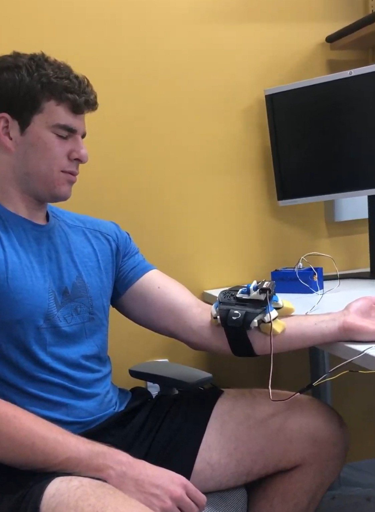
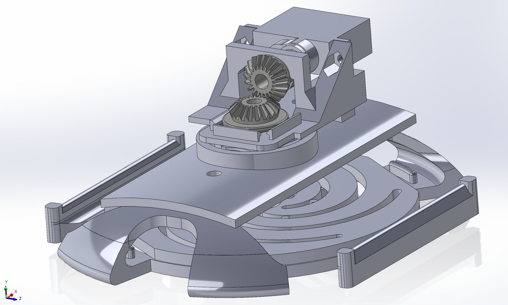
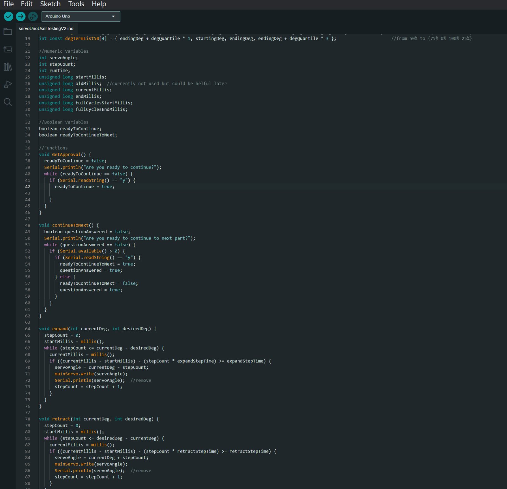

Radially Expanding Haptic Guided Breathing Device

Design Aspects
The wearable converts the radial motion of the motor shaft into outward linear motion using a spiral-shaped camshaft. I designed and iterated the 3D printed design to work with a high-torque servo motor so the cam followers can glide on the skin. I also implemented the miter gears to reduce the vertical footprint of the device for more comfortable use.
Videos of Functional Prototype

CAD Optimization
In order to get all the device to run smoothly, using SolidWorks assemblies was a cruitial step in the process. Because alignment is very important with bevel gears, I had to make every component adjustable for a perfect fit.
Programming the Wearable
The first part of the code involves calibrating the servo motor to find its end range of motion. This is because the cam does not use the entire 360 degrees of the servo. The rest of the code involves various cycles of bringing the cam followers in and out for a desired amount of time. I helped develop and optimize this code alongside a graduate student.
